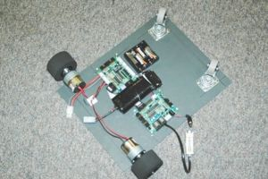

Contenido
[ocultar]Introducción

El taller "Convierte tu PC en un Robot" está orientado a todos aquellos que alguna vez hayan querido poner ruedas a su PC para convertirlo en un robot. Ya sea para disponer de una potencia de cálculo mayor que la de cualquier microcontrolador actual, por evitar tener que aprender a programar a bajo nivel o por el mero hecho de divertirse un poco haciendo aplicaciones frikis.
El robot
FlatBot es una plataforma móvil sencilla que ofrece una superficie plana lo suficientemente grande como para poder transportar objetos de hasta 3 o 4 kilos. Por eso es ideal para poner ruedas a un ordenador portátil.
La plataforma lleva incorporada una electrónica que la hace autónoma, es decir, no necesita un PC para que se mueva, aunque si se dispone de éste se podrán hacer aplicaciones de alto nivel.
Por ejemplo en este video se controla desde el mando de la Wii.
Temario
Sesión I: Hardware
- Montar la estructura
- Explicación de la electrónica
- Primeras pruebas
Sesión II: Programación básica
- Conexión del PC
- Programación autónoma (sin PC)
- Programación en C
Sesión III : Programación avanzada
- Conexión de la WebCam
- Algoritmos de procesado de Video
- Seguimiento de objetos con FlatBot
Fotos
|
Foto del FlatBot |

Foto del FlatBot con la electrónica |

Foto del FlatBot sin el PC portátil |
{kind=link}
Normas Taller "Convierte tu PC en un robot CampusBot 2008"

El taller cuesta 190€ (iva incluido). Incluye lo siguiente:
- Robot Flatbot
- Curso de programación básica y avanzada.
El taller no incluye:
- PC portátil
- WebCam
- Mando de la WII ni módulo Bluetooth
El número de plazas está limitado a 20
Los robots serán entregados el martes 29 de julio durante la primera sesión del taller.
El plazo de adquisición de los robots comienza el 9 de Junio de Mayo para todos los participantes de Campus Party y termina el 18 de Julio.
El taller se impartirá en tres sesiones de 1 hora y media cada día.
Instrucciones de matriculación
Instructores
- Andrés Prieto-Moreno Torres
- Ricardo Gómez González
- Francisco Reinoso Vera